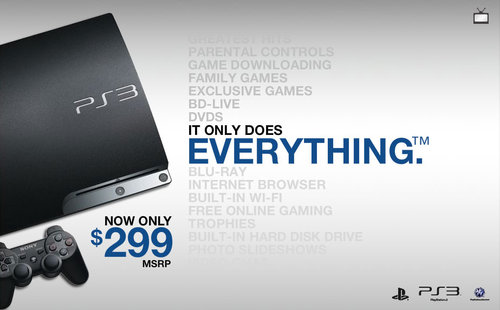
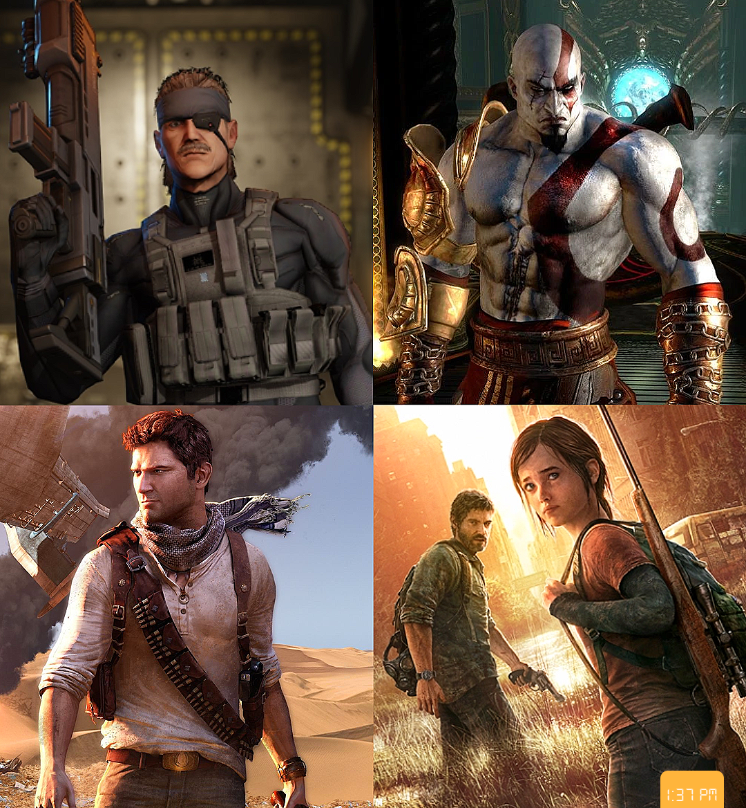

History
The PlayStation 3 (PS3) is a home video game console developed by Sony Interactive Entertainment. The successor to the PlayStation 2, it is part of the PlayStation brand of consoles. It was first released on November 11, 2006, in Japan, November 17, 2006, in North America, and March 23, 2007, in Europe and Australia. The PlayStation 3 competed primarily against Microsoft's Xbox 360 and Nintendo's Wii as part of the seventh generation of video game consoles.
The console was first officially announced at E3 2005, and was released at the end of 2006. It was the first console to use Blu-ray Disk technology as its primary storage medium. The console was the first PlayStation to integrate social gaming services, including the PlayStation Network, as well as the first to be controllable from a handheld console, through its remote connectivity with PlayStation Portable and PlayStation Vita. In September 2009, the Slim model of the PlayStation 3 was released. It no longer provided the hardware ability to run PS2 games. It was lighter and thinner than the original version, and featured a redesigned logo and marketing design, as well as a minor start-up change in software. A Super Slim variation was then released in late 2012, further refining and redesigning the console.
During its early years, the system received a mixed reception, due to its high price ($599 for a 60 GB model, $499 for a 20 GB model), a complex processor architecture, and lack of quality games but was praised for its Blu-ray capabilities and "untapped potential". The reception would get more positive over time. The system had a slow start in the market but managed to recover, particularly after the introduction of the Slim model. On September 29, 2015, Sony confirmed that sales of the PlayStation 3 were to be discontinued in New Zealand, but the system remained in production in other markets.[18] Shipments of new units to Europe and Australia ended in March 2016, followed by North America which ended in October 2016. Heading into 2017, Japan was the last territory where new units were still being produced until May 29, 2017, when Sony confirmed the PlayStation 3 was discontinued in Japan.
Game library
PlayStation 3 launched in North America with 14 titles, with another three being released before the end of 2006. After the first week of sales it was confirmed that Resistance: Fall of Man from Insomniac Games was the top-selling launch game in North America. The game was heavily praised by numerous video game websites, including GameSpot and IGN, both of whom awarded it their PlayStation 3 Game of the Year award for 2006. Some titles missed the launch window and were delayed until early 2007, such as The Elder Scrolls IV: Oblivion, F.E.A.R. and Sonic the Hedgehog. During the Japanese launch, Ridge Racer 7 was the top-selling game, while Mobile Suit Gundam: Crossfire also fared well in sales, both of which were offerings from Bandai Namco Games. PlayStation 3 launched in Europe with 24 titles, including ones that were not offered in North American and Japanese launches, such as Formula One Championship Edition, MotorStorm and Virtua Fighter 5. Resistance: Fall of Man and MotorStorm were the most successful titles of 2007, and both games subsequently received sequels in the form of Resistance 2 and MotorStorm: Pacific Rift.
At E3 2007, Sony was able to show a number of their upcoming video games for PlayStation 3, including Heavenly Sword, Lair, Ratchet & Clank Future: Tools of Destruction, Warhawk and Uncharted: Drake's Fortune, all of which were released in the third and fourth quarters of 2007. It also showed off a number of titles that were set for release in 2008 and 2009, most notably Killzone 2, Infamous, Gran Turismo 5 Prologue, LittleBigPlanet and SOCOM U.S. Navy SEALs: Confrontation. A number of third-party exclusives were also shown, including the highly anticipated Metal Gear Solid 4: Guns of the Patriots, alongside other high-profile third-party titles such as Grand Theft Auto IV, Call of Duty 4: Modern Warfare, Assassin's Creed, Devil May Cry 4 and Resident Evil 5. Two other important titles for PlayStation 3, Final Fantasy XIII and Final Fantasy Versus XIII, were shown at TGS 2007 in order to appease the Japanese market.
Sony have since launched their budget range of PlayStation 3 titles, known as the Greatest Hits range in North America, the Platinum range in Europe and Australia and The Best range in Japan. Among the titles available in the budget range include Resistance: Fall of Man, MotorStorm, Uncharted: Drake's Fortune, Rainbow Six: Vegas, Call of Duty 3, Assassin's Creed and Ninja Gaiden Sigma>. As of October 2009 Metal Gear Solid 4: Guns of the Patriots, Ratchet & Clank Future: Tools of Destruction, Devil May Cry 4, Army of Two, Battlefield: Bad Company and Midnight Club: Los Angeles have also joined the list.
As of March 31, 2012, there have been 595 million games sold for PlayStation 3. The best selling PS3 games are Grand Theft Auto V, Gran Turismo 5, The Last of Us, Uncharted 2: Among Thieves and Uncharted 3: Drake's Deception.
The last game released on the PlayStation 3 was Shakedown: Hawaii, on August 20, 2020.